Editorial Design
Book Production
Front-End Coding
Poster Design
Identity Development
Logo Design
Social Media Content Creation
Video Editing
Photo Retouching
Zahari Dimitrov
b. Sofia, 1998 BA Graphic Design from KABK Based in Sofia, Bulgaria
"Our campaign triggers an explosion, a curiosity, attention to something precious and a wish to explore. Reflecting upon our own experiences while studying at the KABK was our main fuel. The campaign bridges both the wild, experimental, and subtle, reflective modes of studying. By mixing archival and original visuals from scientific, fictitious and primary sources, our campaign recalls the cycles of time. It symbolizes the rite of passage, where the current generation invites another to take its place."
"Seeing is believing." Visual identity and campaign for the 25th edition of the Sofia International Film Festival. The mythical unicorn stood for the uncertainty of the festival during the pandemic. The viewer must believe in it to see it.
Made during my time working at guts&brainsDDB.
BA Thesis written over the summer, autumn and winter in Sofia, Berlin, The Hague and Amsterdam. Digested by various externalities, it explores the essence of human metabolism as a reflection of global processes and a tool for feeling the world.
Details: 90 pages, 20x28 cm, Munken and Fuego Felt paper, swiss binding with embossed soft cover, bilingual edition French/English.
For the graduation show of the BA Graphic Design at KABK. Identity, printed matter, signage, social media content. On Our Own Time was conceived as a concept during the lockdown period in The Netherlands. It is inspired by the methods of creation each of the 40 students developed as a consequence of the physical isolation. Used in the digital catalogue here.
Vocal Fry, Margaret Tatcher and Sperm Wales. This script is an exploration in the realms of the voice and a response to "Alphabet Reform" by Experimental Jetset.
"In this publication we explore different aspects of our civilizations, cultures and beliefs that are not generally analyzed together. The connections between them might not seem too obvious, but from a closer look it can be noticed that the body and the way it is seen is the thread that links all the topics in a strong but subtle way. In fact, ethical and cultural structures have always had a major role in the way we perceive ourselves and the way we want to be seen."
Alongside the printed page, written language is represented in various forms. Public space is illed with messages of all kinds written by the individuals that inhabit it. Through these interventions of self-expression, different forms of written and oral language have been born that go unaccounted for in the history of communication. Each of these methods has its own formal and conceptual qualities, as well as its own history and background. These tools represent an untold history of graphic design that has existed and developed alongside the popular communication tools of print publishing, radio, television and the internet.
Design works made for Viktor Naumovski exhibition with Badland Magazine in Skopje and KABK Graduation Work in The Hague.
Inhabitants of Veles, Macedonia have become well know for their production of fake news as a way of earning money in and isolated and impoverished region. "The factory" is a documentary sequence which tells the story of Veles, Macedonia, from the perspective of the “makers". With commentary by Geert Lovink from the Institute of Network Cultures.
Social-telling device. Hyperobject. Food. Sociality. Collaboration with Yana Abrasheva.
In a society saturated by information extraction, leisure in the form of consumption is desired. Boredom is not.
Six degrees of separation is the idea that all living things and everything else in the world are Six or fewer steps away from each other.
"All my childhood I was lying to my mother that on Sunday mornings I was going to church. Instead I was just playing in the neighbourhood with my friends."
Seven is a number, but 7 is a numeral. The terms ‘number’ and ‘numeral’ are often confused. A number stands for a quantitative concept; a numeral is a graphic sign that represents a number.
Redesign of "ProRenova Bauforum 2015" by Studio Kasper Florio
A series of posters for a class exhibition using silkscreen and cyanotype printing.


 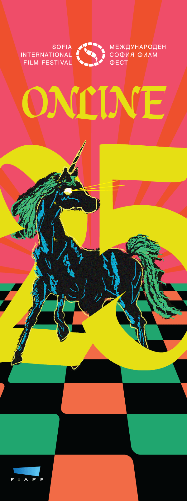
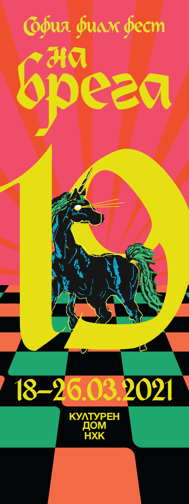
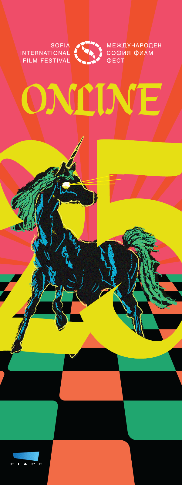
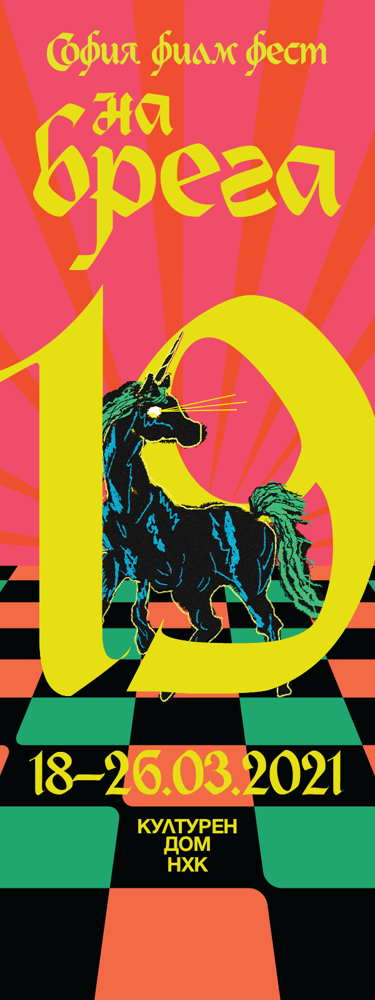

 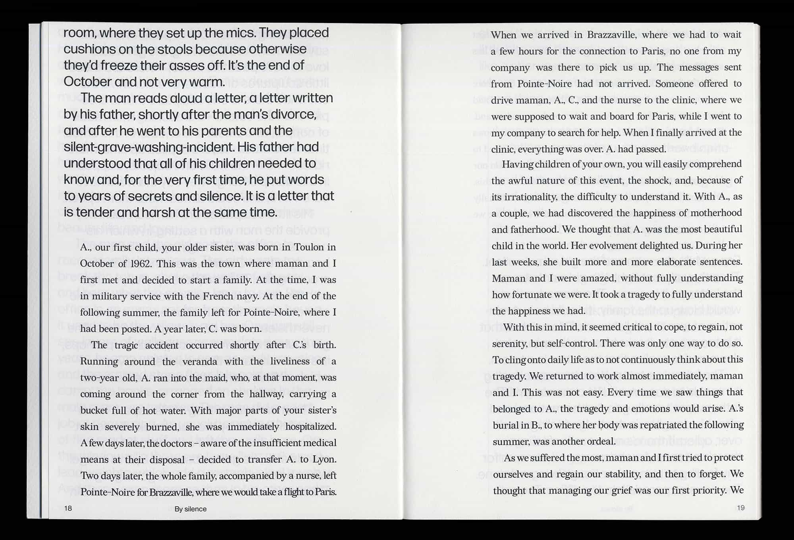
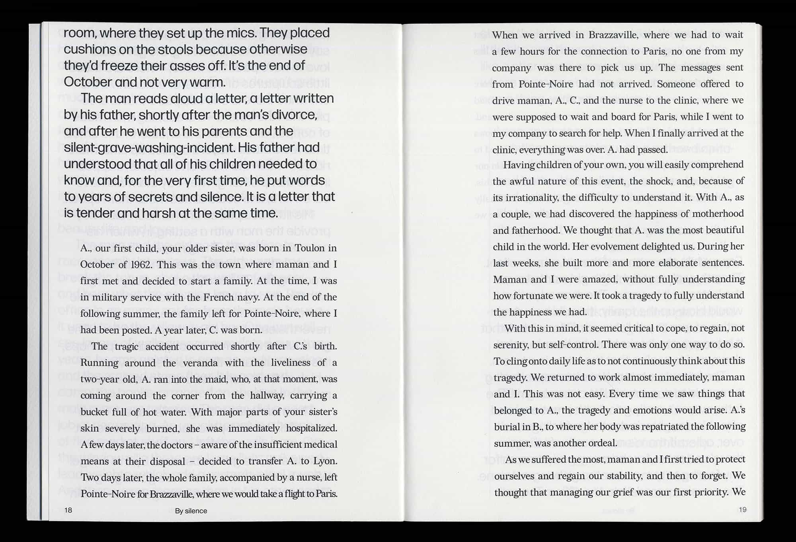


 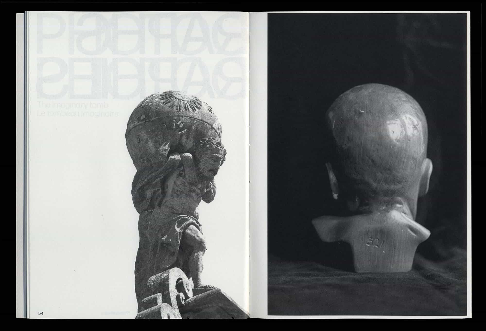
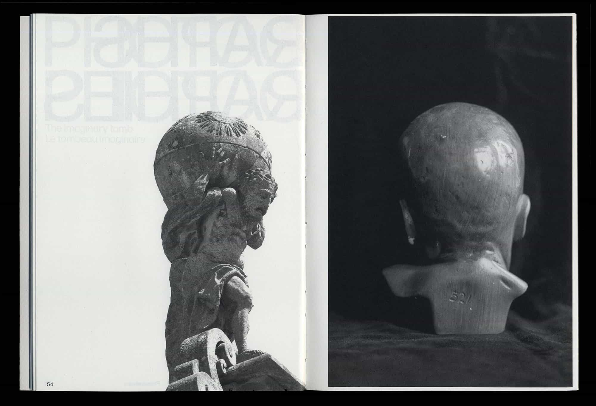


 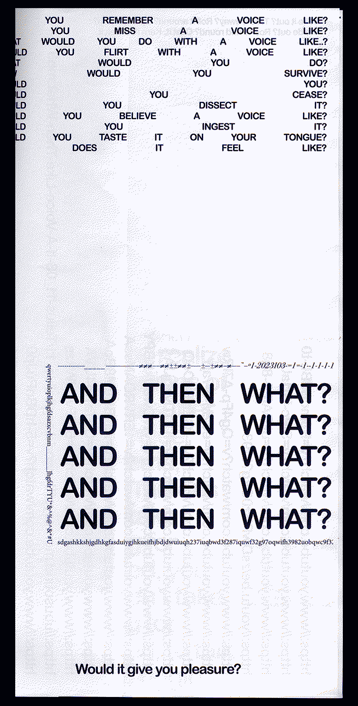
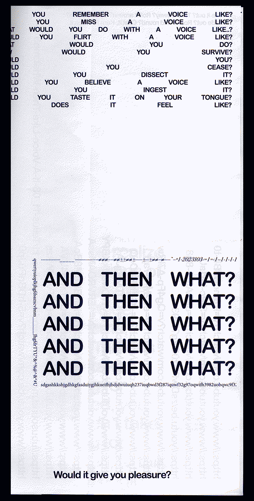


 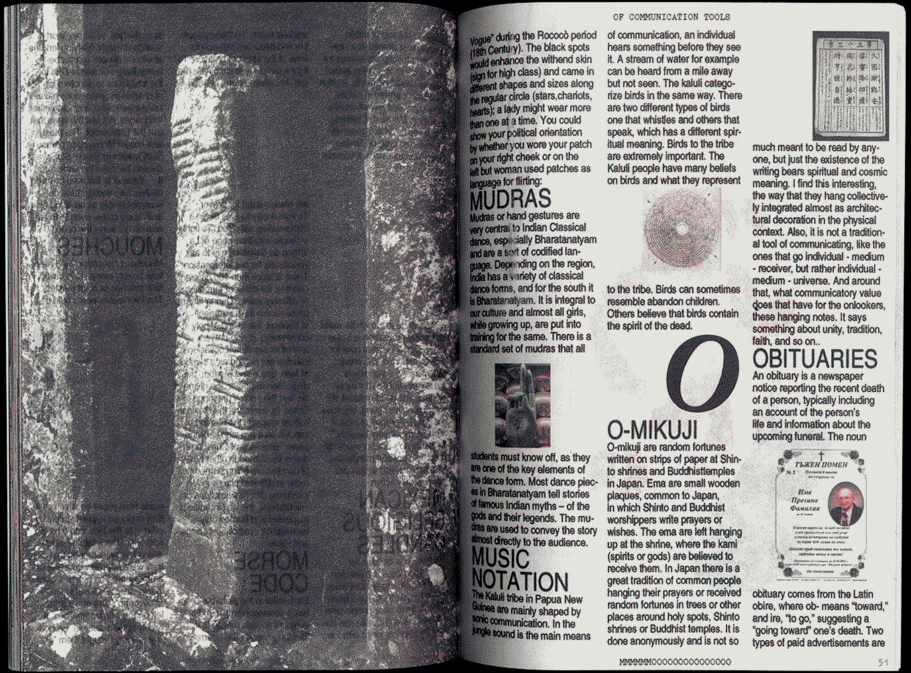
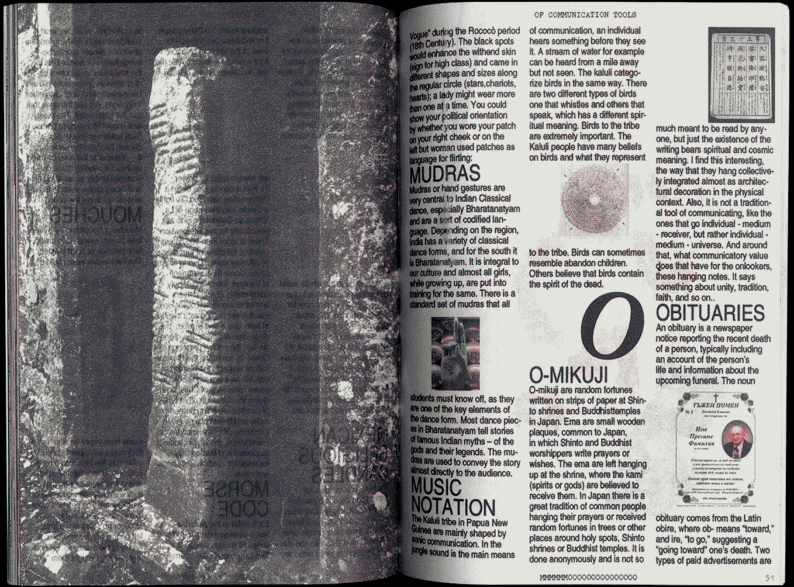


 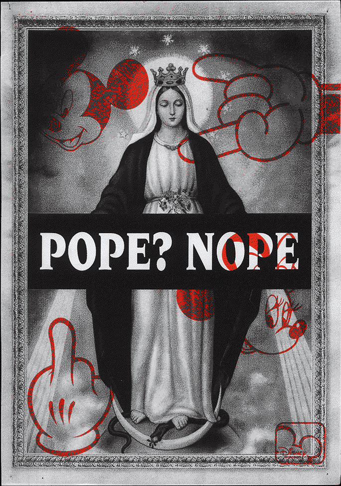
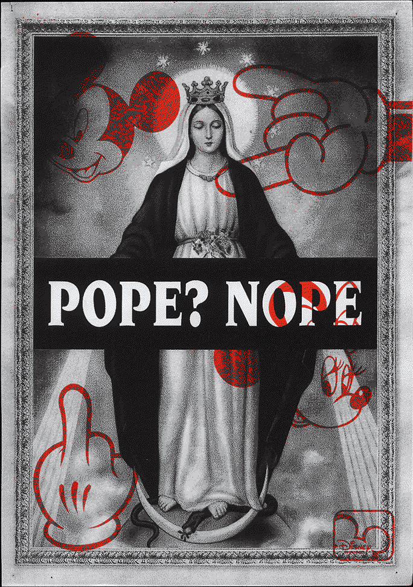


 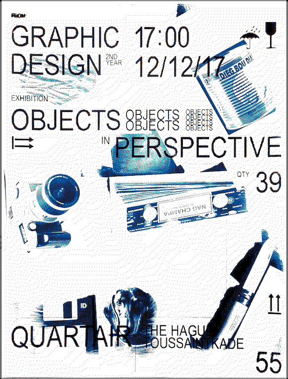
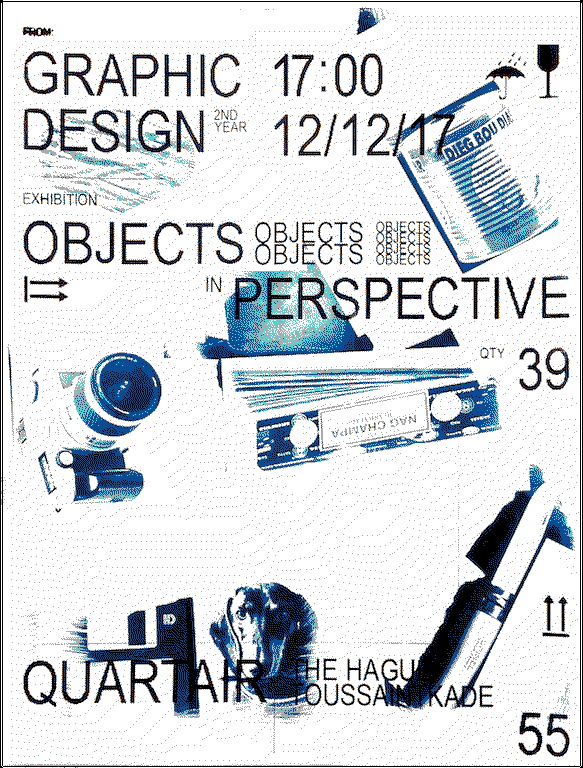


 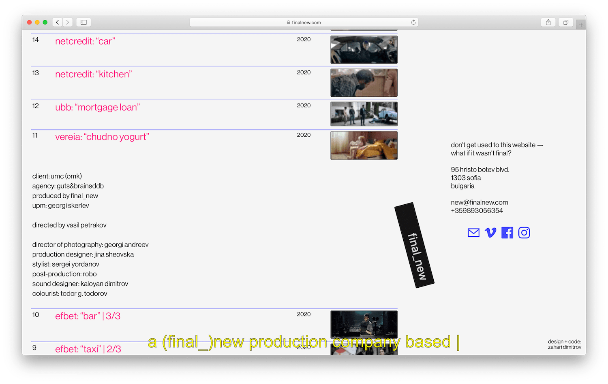
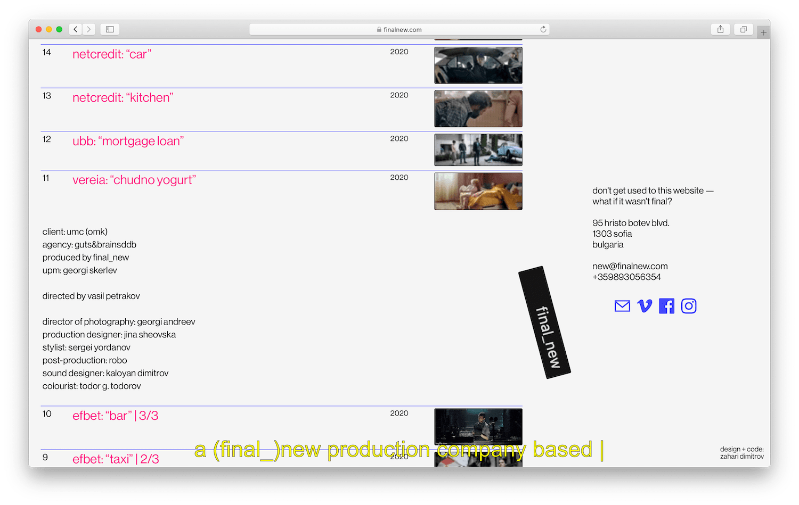